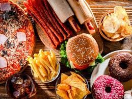

conhecendo os alimentos: do natural ao industrializados
A principal diferença entre alimentos in natura e processados está no nível de intervenção industrial e na adição de substâncias estranhas ao alimento original. A classificação NOVA, desenvolvida por pesquisadores brasileiros, separa os alimentos baseada no processamento:
Alimentos ultraprocessados são formulações industriais feitas inteira ou majoritariamente de substâncias extraídas de alimentos (óleos, gorduras, açúcar, amido, proteínas), derivados de constituintes de alimentos ou sintetizadas em laboratório com base em petróleo e carvão. Eles passam por diversas etapas de processamento, como extrusão, moldagem e pré-fritura, resultando em produtos prontos para consumo. 1 coca cola 2 salgadinho 3hanbuegue 4bolacha recheada 5fini
